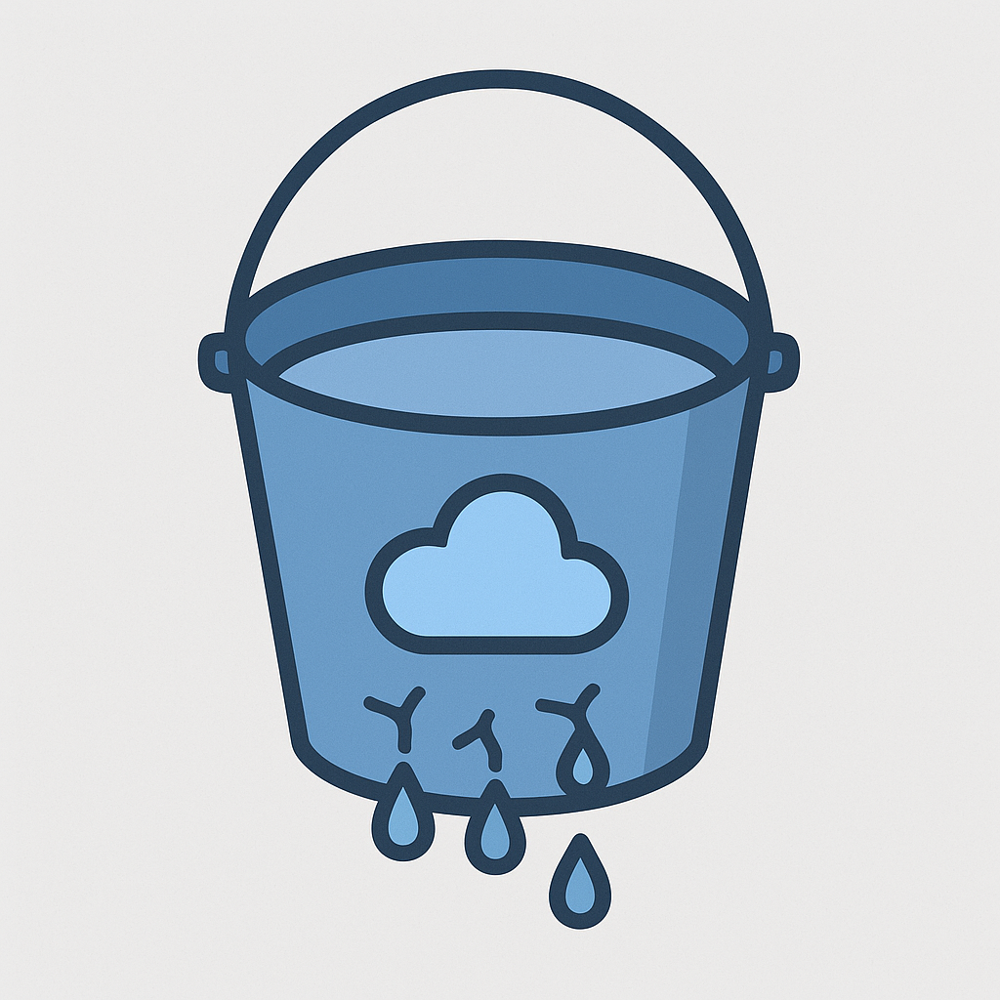

How a Public-Facing Bucket Led to One of the Largest Mobile App Data Leaks — and How to Prevent It
Posted on August 29, 2025 by APK Leak Scanner Team
TL;DR: A single misconfigured Firebase bucket in a popular tea delivery app exposed thousands of users' private details to the public internet. Within days, malicious actors exploited the data to doxx victims across social platforms.
Our APK Leak Scanner was built to prevent exactly this kind of disaster.

☕ The Tea App Leak: What Went Wrong?
Earlier this year, security researchers discovered that a tea delivery app, downloaded by millions of users, had left its Firebase storage bucket wide open.
That meant:
- No authentication was required
- Anyone with a browser could list files
- Sensitive data (phone numbers, order history, even GPS delivery routes) was sitting publicly on the internet
Once attackers noticed, the exploitation was swift:
- The bucket was scraped using automated tools
- Personal details were aggregated
- Thousands of innocent users were doxxed on forums and Telegram groups
The root cause wasn’t a zero-day. It wasn’t a sophisticated hack.
It was a simple misconfiguration that no one caught.
🔠Why This Matters for Developers
Today’s apps don’t just live on phones. They are tightly coupled with cloud services:
- Firebase
- AWS S3
- GCP Buckets
- Azure Storage
- Dozens of other backends
When developers hardcode cloud service IDs, API keys, or expose unauthenticated storage, the entire userbase is put at risk.
The Tea App incident is just one of many. It could happen to anyone rushing to push code to production without a final security scan.
🛡️ How APK Leak Scanner Prevents These Issues
THAT'S WHERE OUR TOOL COMES IN!

APK Leak Scanner is a lightweight static analysis tool that:
- ✅ Scans Android APKs for embedded cloud service configurations (Firebase, AWS, Azure, GCP, etc.)
- ✅ Detects public-facing buckets and warns you before attackers do
- ✅ Flags hardcoded secrets, tokens, and API keys
- ✅ Analyzes permissions and exported components for potential abuse
- ✅ Generates professional reports in HTML format for display right in the site
Our scanner doesn’t replace a full pentest or enterprise-grade suite — but it fills the critical blind spot that allowed the Tea App disaster to happen.
📈 Why Security-Minded Developers Love This
- Fast: Upload your APK and get results in minutes
- Transparent: Clear reports with remediation advice
- Focused: Finds what actually leaks, not just noise
- Free: Yes, we said FREE!
By integrating this tool into your CI/CD pipeline, you can stop a leak before it ever hits production.
⚖️ A Note on Responsibility
- 🚫 Do not use it to target apps you don’t own or have explicit permission to test
- ✅ Do use it as part of your defensive security practice
We believe better tools in the hands of developers mean fewer headlines like the Tea App breach.
🔗 Get Started
Security isn’t about paranoia. It’s about prevention. The Tea App leak didn’t have to happen. With the right tools, the next one won’t.